Ownership captured at the source
One new question in the rating wizard told the system which properties a user owned. That unlocked performance tracking and a path to selling through the platform.
protected case study
This case study is password protected. Don't have the code? Email hi@annikagromig.com.
case study
PropRate Portfolio Dashboard
PropRate rated properties with its own AI analysis, PropRating, which combined five years of price development, location, comparable prices and expected return into a single score. The rating was strong. The dashboard around it was not: it could not tell what a user owned from what they were only watching, so it could not show investors the one thing worth coming back for, how their properties were performing.
As senior product designer, I traced that gap to a single missing piece of data, redesigned the rating flow and dashboard around it, and turned a list of identical cards into a real portfolio. Along the way, I consolidated three design tools into one Figma library and rebuilt the blog mobile first.
impact
One new question in the rating wizard told the system which properties a user owned. That unlocked performance tracking and a path to selling through the platform.
Owned properties open with market value, purchase price and development since purchase, readable within seconds on any screen size.
Sketch, Abstract and Zeplin replaced by a single Figma library built on atomic design, one source for design, collaboration and handoff.
challenge
PropRate let people search listings from the major real estate portals and rate any property with PropRating. The business wanted the dashboard to do more: show owners how their investments were performing, make PropRating the reason to come back, and open a new revenue stream by letting owners sell through the platform.
The existing dashboard could not support any of that. My UX review surfaced three problems:
How might we help owners and investors see at a glance what they own, what they are watching, and how each property is doing?
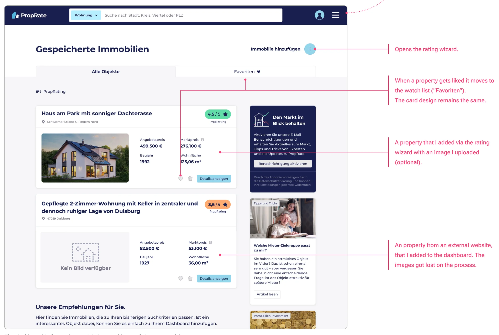
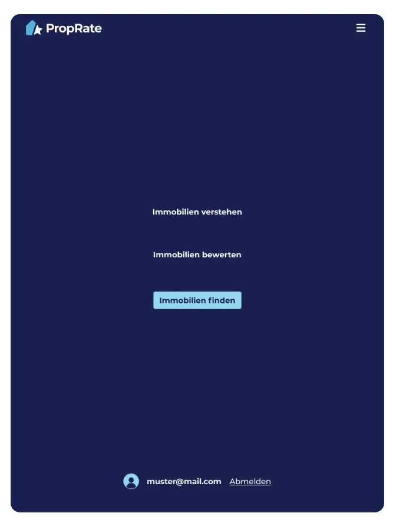
key decision
Rather than patching the cards, I went back to why people came to PropRate: to rate a property they own, to evaluate one they are considering, or to keep an eye on a listing found elsewhere. Mapping these use cases made the root cause obvious. Users thought in two categories, what they own and what they are watching. The product had no way to tell the two apart, so it could not show performance for owned properties at all.
Instead of asking users to sort their dashboard later, I added one question to the rating wizard: are you rating your own property or an offer? Owners then enter the purchase price and year, the two inputs needed to calculate value development since purchase. Everyone else goes straight to the address. Every property now lands in the right place from the start, and nothing changes type behind the user's back.
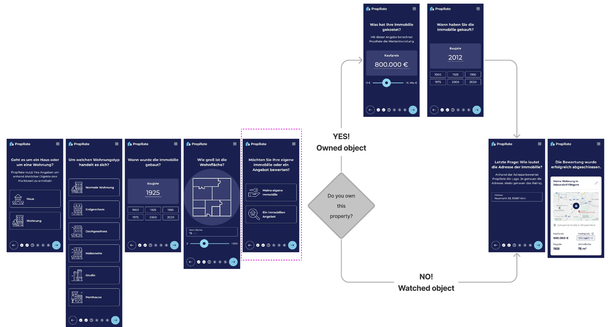
The same split shaped the navigation. My portfolio and Watched properties moved to the top of the menu, one tap away from anywhere in the product.
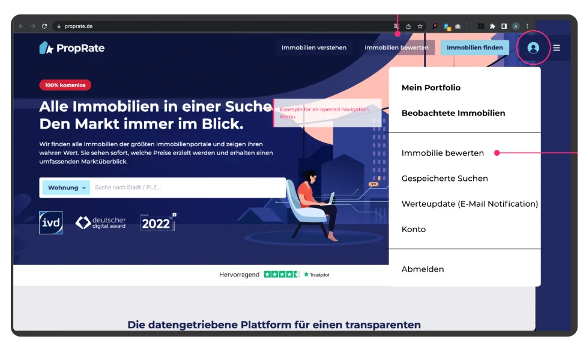
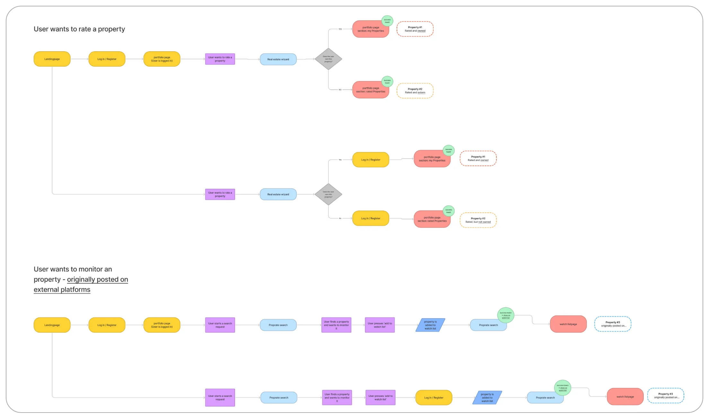
redesign
We kept the familiar two tabs but gave each one a single, clear job.
A home for real estate the user owns. It opens with an overview of market value, purchase price and development since purchase, followed by the individual properties. It also leaves room for selling directly through the platform, the new revenue stream PropRate was aiming for.
Properties the user has rated or saved but does not own, followed by recommendations for similar ones. The tab becomes a starting point for the next investment.
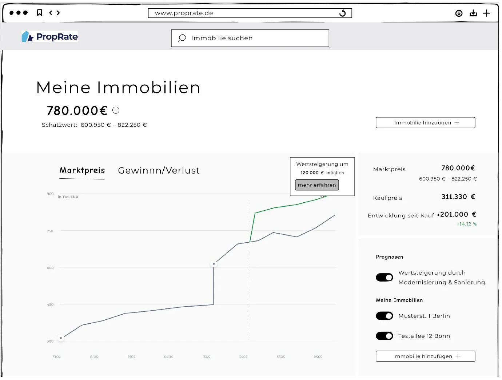
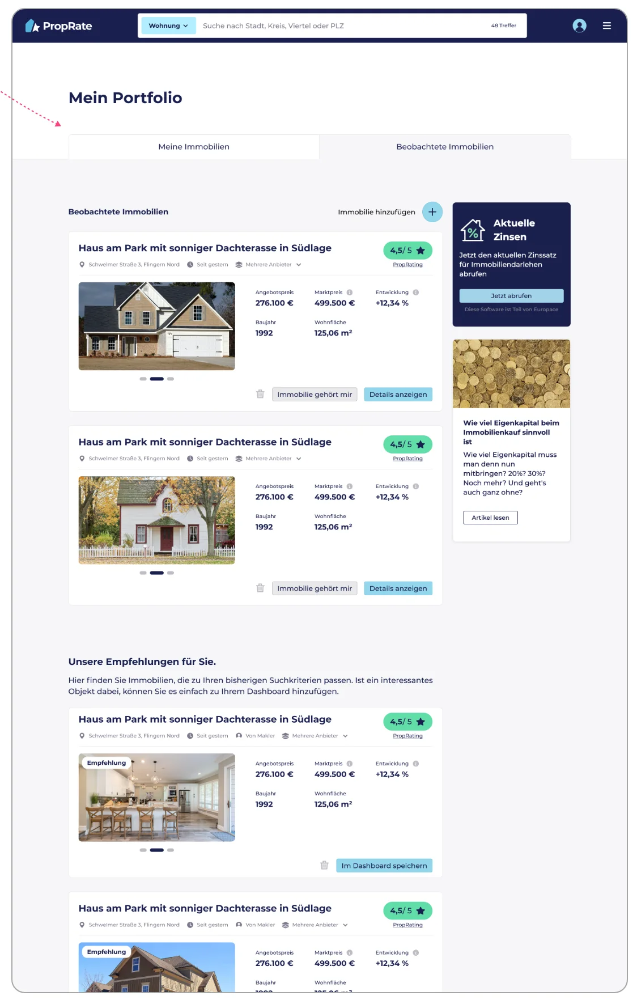
data visualization
An investor should know within seconds whether a property is moving up or down. I explored several ways to set purchase price against market value and show five years of value development: line charts, rings, bubbles and bars.
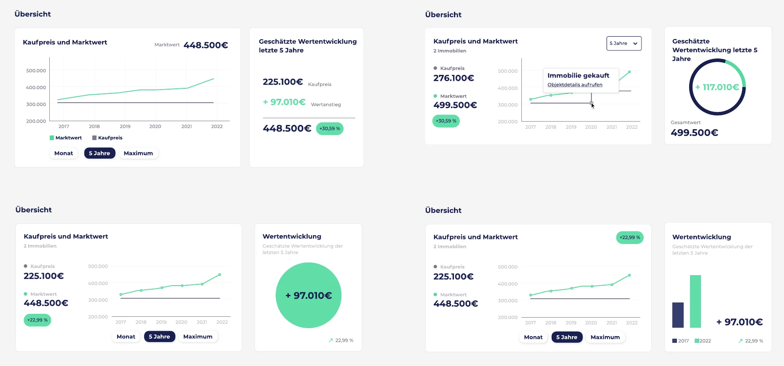
I made the final call together with development, choosing the version that was clearest for users and the most sustainable and economical to build and maintain. I then defined the layouts across four breakpoints and tested them as a clickable prototype.
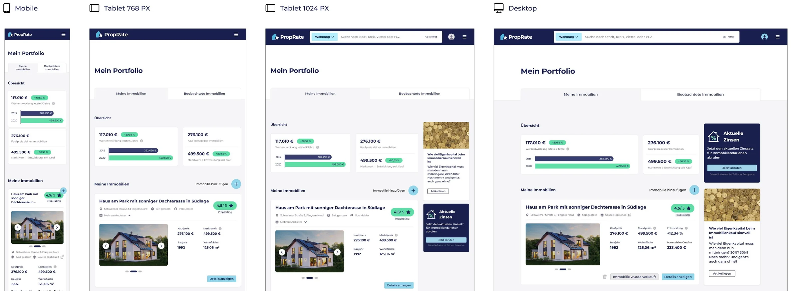
A new user who opens the portfolio before rating anything sees an empty state with a direct shortcut to add their first property, instead of a blank page.
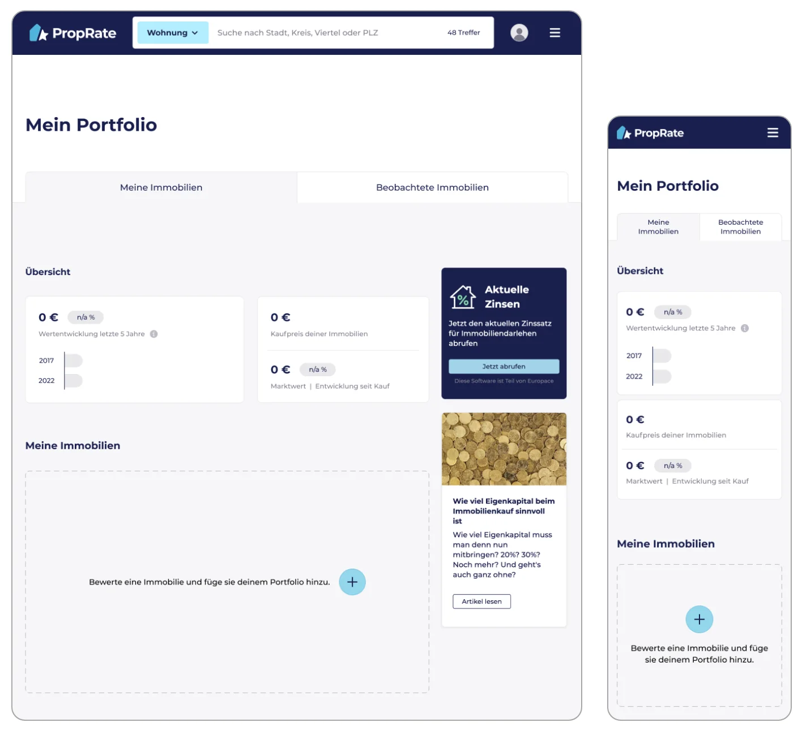
design system
PropRate's design work was spread across Sketch for design, Abstract for version control and Zeplin for handoff. I moved everything into Figma. Instead of importing the Sketch files, which never converts cleanly, I rebuilt the library from the ground up: color, type, grid, buttons, forms and more, each with all states and responsive variants.
Following atomic design, I split the library into five files, so everyone always knew where a component lived:
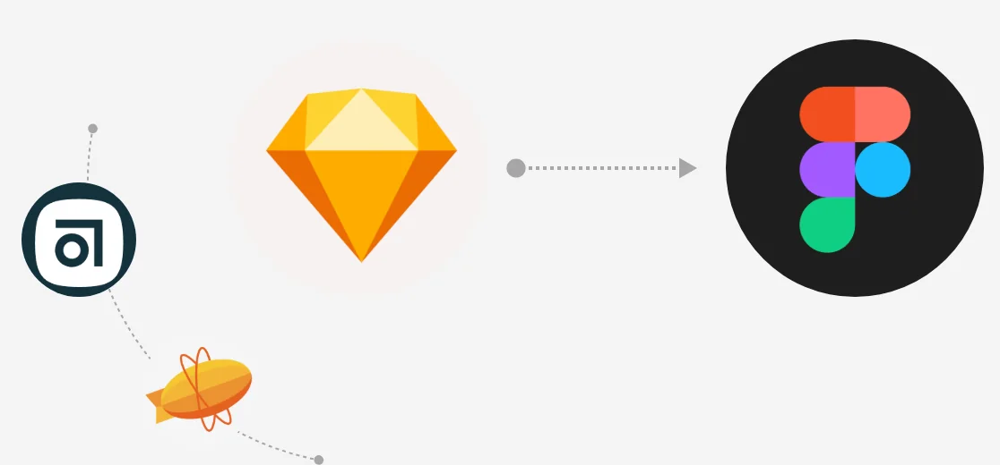
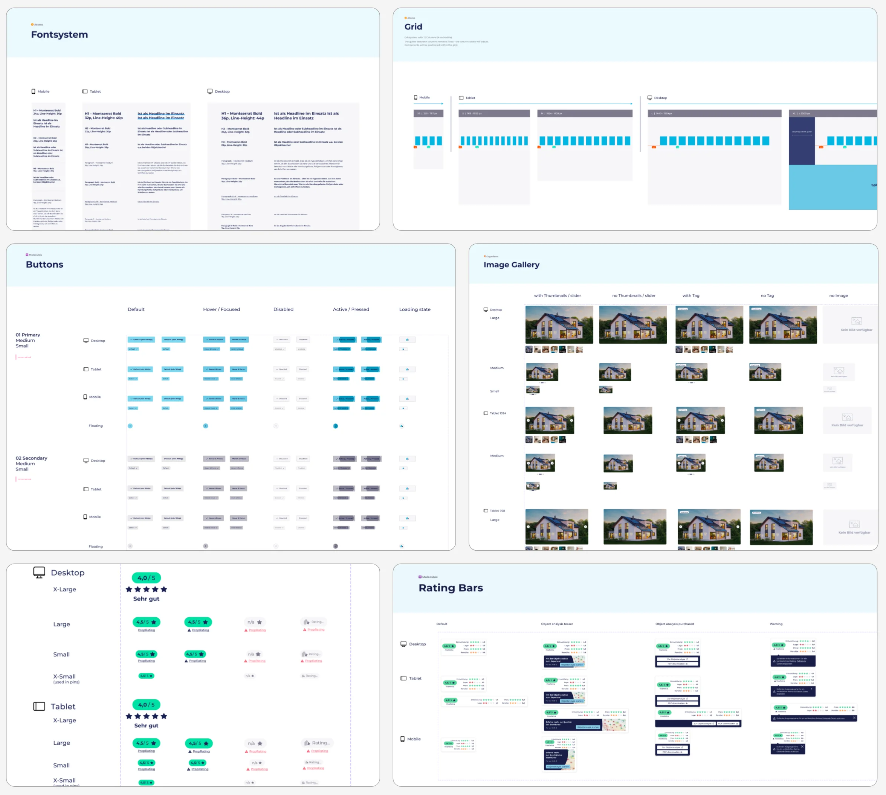
content & seo
Marketing wanted the blog to bring in search traffic, with feature landing pages and a new tag system of pillar pages. The existing blog was an overview with a few tag filters and mostly plain text posts.
Together with marketing, I sorted the requirements into must-haves and nice-to-haves, then designed both page types mobile first. The overview got a highlighted post, rich article teasers, tags and search. The post template got reading time, a reading progress bar, quotes, images, sharing and related articles. I also increased the line height of article text to a comfortable reading standard.
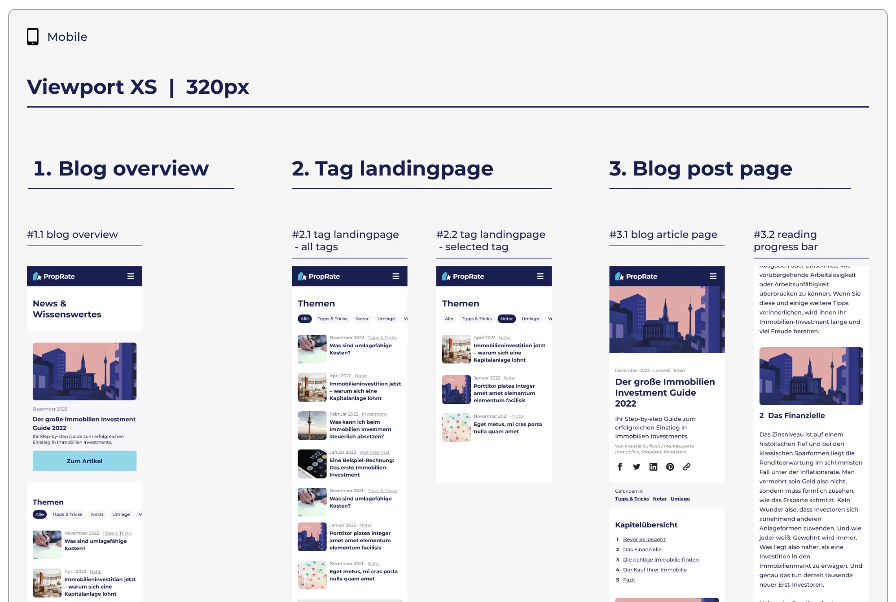
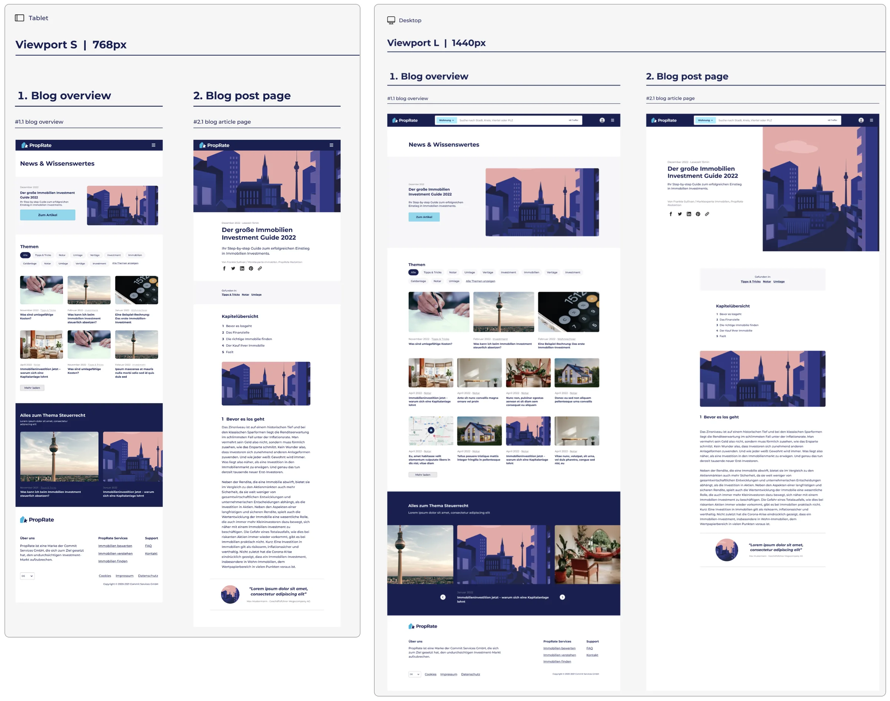
outcome
PropRate's AI analysis was only as useful as the interface around it. By capturing ownership at the moment of rating, the dashboard finally matched how users thought about their real estate, every property kept a clear origin, and the business gained the data it needed for performance predictions and future sales features.
The team also came away with one Figma library for design, collaboration and handoff, and a blog structure ready for the new SEO strategy.
The visual problems all traced back to one missing fact. Asking a single question at the right moment solved more than any card redesign could.
If the system transforms something the user added, say so. Otherwise a useful feature turns into a source of confusion.
A tool migration is the best chance to clean up the foundations of a design system.
Screens & flows
Every screen, flow and library page from the project in one place.